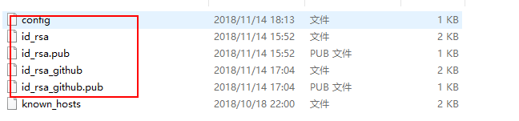

一台电脑，两个及多个git账号配置
#工具 #git- 生成两[三]个ssh公钥私钥
假定其中一个是id_rsa, 另一个时id_rsa_twossh-keyten -t rsa -C 32355788@qq.com
复制公钥
把生成好的ssh的公钥相对应复制到github[/gitlab]的settings中的SSH and GPG keys配置config文件
如果在.ssh/下没有config文件，可以touch config

##可缺省，此时ssh -T git@github.com,默认就是和拥有id_rsa.pub的github账号对接。
#github server one
Host github #域名地址的别名
Hostname github.com #这个是真实的域名地址
User git #配置使用用户名
IdentityFile ~/.ssh/id_rsa #这里是id_rsa的地址
#github server two
Host github_two
Hostname github.com
User git
IdentityFile ~/.ssh/id_rsa_two
##如果有第三个或者更多
#gitab server
Host gitlab
Hostname gitlab.com
User git
IdentityFile ~/.ssh/id_rsa_gitlab
- 测试
ssh -T git@gihub
#如果配置正确会提示
Hi your name one in github ! You've successfully authenticated, but GitHub does not provide shell access.
ssh -T git@gihub_two
#如果配置正确会提示
Hi your name two in github ! You've successfully authenticated, but GitHub does not provide shell access.
ssh -T git@gitlab
#如果配置正确会提示
Welcome to GitLab, Your GitLab nickname!
- Clone 项目到本地
在工作目录下，首先先git init，然后才能使用git命令clone项目到本地
#之前的方式:单个账号
git clone git@github.com:firstAccount/xxx.git #缺省config配置时
git clone git@github:firstAccount/xxx.git #config配置后，等价于第一条语句
#现在要改为，git clone git@域名别称：用户名/项目名
git clone git@github_two:secondAccount/xxx.git //就是使用域名地址的别名来区分
git clone git@gitlab:gitlabAccount/xxx.git
- 配置本地git用户名和邮箱(非必须项)
如果首次push repo没有配置git的账号和邮箱，可以如下配置
#全局配置
git config --global user.name "Your name"
git config --global user.email your_email@gmail.com
##非必须项
#局部配置，如果没有局部配置，默认用全局配置否则优先使用局部配置
cd ~/workspace/github_two/
git init
git config user.name "Your name"
git config user.email your_email@gmail.com